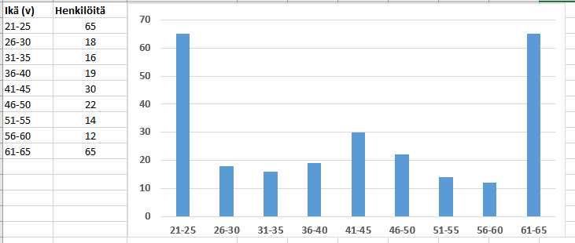

Tunnuslukuja
Contents
Tunnuslukuja#
Tilastollista jakaumaa kuvaavia tunnuslukuja ovat keskiarvo, keskihajonta, moodi, mediaani ja prosenttipisteet. Tällaisia lukuja voidaan laskea, jos tilastollinen muuttuja on laadultaan kvantitatiivinen (moodi voidaan laskea myös kvalitatiiviselle muuttujalle). Tunnusluvun tarkoituksena on tiivistää tilaston sisältämä informaatio yhden luvun mittaiseen, mutta havainnolliseen muotoon. Väärin käytettynä tunnusluvut voivat kuitenkin helposti vääristää tilaston informaatiota.
Keskiarvo#
Yleisin tunnusluku on keskiarvo \(\bar{x}=\frac{\sum_{i=1}^n x_i}{n}\),
missä \(n\) on kaikkien havaintojen määrä ja arvot \(x_i\) ovat eri havaintoja vastaavia arvoja.
Merkintä \(\sum_{i=1}^n x_i\) tarkoittaa, että lasketaan summa \(x_1 + x_2 + \ldots x_n\).
Jos aineisto on esitetty frekvenssitaulukkona, niin keskiarvo saadaan kaavalla
\(\bar{x}=\frac{\sum_{i=1}^n f_i x_i}{n}\),
missä \(f_i\) on muuttujan arvon \(x_i\) frekvenssi.
Keskiarvo voidaan Excelissä laskea funktiolla KESKIARVO tai AVERAGE. Funktion parametriksi tulee luvut sisältävä alue joko hiirellä maalaamalla tai kirjoittamalla soluindeksit. Erilliset alueet yhdistetään ; -merkillä, tai hiirellä valitessa Ctrl-näppäintä pohjassa pitämällä.
Keskihajonta#
Keskihajonta \(\sigma\) kuvaa, kuinka paljon yksittäiset havainnot keskimäärin poikkeavat aineiston keskiarvosta, tai toisaalta sitä, kuinka laajalle muuttujan arvot ovat levittäytyneet keskiarvon ympärille. Keskihajonnan laskukaava on
\(\sigma=\sqrt{\frac{\sum_{i=1}^n (x_i-\bar{x})^2}{n}}\).
Jos aineisto on esitetty frekvenssitaulukkona, niin keskihajonta saadaan kaavalla
\(\sigma=\sqrt{\frac{\sum_{i=1}^n f_i (x_i-\bar{x})^2}{n}}\).
Jos suuresta joukosta otetaan näyte, esim. jos tehtaan tuotantolinjalta otetaan pistokokein näytekappaleita, keskihajonta lasketaan hieman eri kaavalla:
\(\sigma=\sqrt{\frac{\sum_{i=1}^n f_i (x_i-\bar{x})^2}{n-1}}\).
Excelissä aineiston keskihajonta saadaan KESKIHAJONTA.P tai KESKIHAJONTA.S -funktiolla. Näistä yleisemmin käytetään funktiota KESKIHAJONTA.S, joka vastaa jälkimmäistä edellä esitetyistä kaavoista (s-kirjain tulee sanasta sample ja p-kirjain sanasta population). Useinhan kaikkea mahdollista ei pystytäkään mittaamaan, vaan joudutaan ottamaan näytteitä joiden toivotaan antavan luotettavan kuvan koko populaatiosta.
Varianssia \(\sigma^2\) käytetään myöhemmin todennäköisyyslaskennassa.
HUOM! Jos aineisto on esitetty luokiteltuna frekvenssitaulukkona, keskiarvo ja keskihajonta voidaan laskea käyttämällä muuttujan arvoina luokkien ala- ja ylärajojen keskiarvoja. Esimerkiksi luvun ”Jatkuvat jakaumat” esimerkissä keskiarvo ja keskihajonta laskettaisiin luokkakeskiarvojen avulla seuraavasti:
Keskiarvo:
\(u=\frac{5 \cdot 650 + 7 \cdot 750 + 4 \cdot 850 + 6 \cdot 950 + 8 \cdot 1050}{5+7+4+6+8}~\mu\text{s} = 870~\mu\text{s}\)
Keskihajonta:
\(\sigma = \sqrt{\frac{5\cdot(650-870)^2+7\cdot(750-870)^2+4\cdot(850-870)^2+6\cdot(950-870)^2+8\cdot(1050-870)^2}{5+7+4+6+8}} = 146~\mu\text{s}\)
Suoraan alkuperäisestä, luokittelemattomasta aineistosta laskettuna keskiarvoksi saataisiin 861 µs ja keskihajonnaksi 153 µs, eli ero ei ole kovin suuri.
Moodi#
Moodi on aineiston tyypillisin, eli useimmin toistuva, muuttujan arvo. Moodi soveltuu sekä kvalitatiiviseen että kvantitatiiviseen aineistoon. Esimerkiksi jos kyselyssä “kyllä” -vastauksia saadaan 100 kpl, “ei” -vastauksia 50 kpl ja “en osaa sanoa” -vastauksia 90 kpl, niin moodi on “kyllä”. Moodeja voi olla useampikin, jos useampaa muuttujan arvoa esiintyy aineistossa yhtä monta kertaa.
Jos aineisto on esitetty frekvenssitaulukkona eli tiettyä muuttujaa vastaavien havaintojen määränä, moodi nähdään aineistosta suoraan – sehän on se muuttujan arvo, jonka frekvenssi on suurin. Jos taas havainnot on esitetty listana tai taulukkona, voidaan käyttää Excelissä funktiota MOODI (MODE).
Esim. Tietyn yrityksen henkilöstön ikäryhmien moodit ovat 21-25 v ja 61-65 v, eli näiden kahden ikäryhmän edustajia on eniten. Tässä havaintoarvot ovat luokkia, eli henkilöiden ikiä ei ole tilastoitu vuoden tarkkuudella vaan henkilöt on jaoteltu ikäryhmiin viiden vuoden tarkkuudella.

Mediaani#
Mediaani on järjestyksessä olevan aineiston keskimmäinen arvo. Jos lukuja on parillinen määrä, niin mediaani on kahden keskimmäisen arvon keskiarvo. Puolet havainnoista on mediaania pienempiä, puolet taas suurempia. Taulukoidun aineiston mediaanin laskemiseen voidaan käyttää Excelin funktiota MEDIAANI (MEDIAN).
Luokitellusta aineistosta, jossa frekvenssi on ilmoitettu, saadaan mediaani laskemalla eri luokkien summafrekvenssi ja edelleen suhteellinen summafrekvenssi. Luokan summafrekvenssi tarkoittaa niiden havaintojen määrää, jotka kuuluvat kyseiseen luokkaan tai sitä aiempiin luokkiin. Suhteellinen summafrekvenssi on tiettyyn luokkaan tai sitä aiempiin luokkiin kuuluvien havaintojen osuus kaikista havainnoista. Mediaani on se arvo, jonka kohdalla suhteellinen summafrekvenssi on vähintään 50 %.
Prosessi on esitetty seuraavissa kuvissa (suomenkielisessä Excelissä summa lasketaan funktiolla SUMMA). Aineisto on sama kuin edellisessä ikäjakauma-esimerkissä. Ensimmäisessä kuvassa lasketaan, kuinka monta henkilöä kuuluu tiettyyn ikäluokkaan tai johonkin alemmista ikäluokista. Viimeisen ikäluokan summafrekvenssiksi pitäisi tulla täsmälleen sama luku kuin työntekijöiden yhteismäärä, sillä varmasti jokainen kuuluu joko vanhimpaan tai johonkin nuoremmista ikäluokista. Sen jälkeen lasketaan summafrekvenssien suhteelliset osuudet koko henkilöstön määrästä. Huomataan, että 57 % työntekijöistä kuuluu 41-45 vuotiaiden ikäluokkaan tai johonkin sitä nuoremmista ikäluokista. Se on siis iän mediaaniluokka.

Prosenttipisteet#
Mediaani on erityistapaus prosenttipisteistä. Prosenttipiste kertoo tilastollisen muuttujan arvon, jota pienempiä on tarkasteltava prosenttiosuus aineistosta. Esimerkiksi ihmisten pituuksien jakaumassa 90 % prosenttipiste tarkoittaa pituutta, jota lyhyempiä on 90 % väestöstä. Mediaani on 50 % prosenttipiste. Excelissä on oma funktio PROSENTTIPISTE (PERCENTILE).
Neljännes tai kvartiili (quartile) on erityisnimitys 25 % (ns. alakvartiili) tai 75 % (ns. yläkvartiili) prosenttipisteelle. Yllä olevan aineiston henkilöstöstä 25 % kuuluu ikäluokkaan 21-25 v ja 75 % on nuorempia kuin 61 vuotta. Excel sisältää kaksi neljännesfunktiota NELJÄNNES.SIS ja NELJÄNNES.ULK (tai pelkkä NELJÄNNES).
Kuvassa alla on esimerkki tunnuslukujen laskemisesta ja merkityksestä. Tarkastellaan kahta kuvitteellista yritystä, joilla on kummallakin myynnissä kuutta erilaista tuotetta. Yritysten tuotteiden hinnoilla on sama keskiarvo, mutta valikoima eri hintaisilla tuotteilla on selvästi erilainen.

Vinous ja huipukkuus#
Keskiarvo ja keskihajonta kuvaavat hyvin tilastollista informaatiota silloin, kun havaintoarvot ovat jakaantuneet niin sanotusti normaalisti keskiarvon ympärille. Normaalijakaumasta on lisää tietoa myöhemmissä luvuissa.
Tilastoaineisto voidaan olettaa normaalisti jakautuneeksi, jos tilastolliset tunnusluvut vinous (skewness) ja huipukkuus (kurtosis) antavat arvon nolla, tai ainakin lähes nolla. Molempiin on erilaisia laskentakaavoja, mutta Excelin valmiit funktiot JAKAUMAN.VINOUS (SKEW) ja KURT riittävät. Lukuarvot voidaan määrittää sekä diskreeteille että jatkuville muuttujille.
Alla olevassa kuvassa on esimerkkejä erilaisista vinouden arvoista. Jos vinous on positiivinen, niin aineiston moodi on pienempi kuin mediaani tai keskiarvo. Aineistossa on siis paljon pieniä arvoja, mutta muutamia niin suuria arvoja, että ne kasvattavat keskiarvoa. Negatiivisen vinouden tapauksessa järjestys on päinvastainen. Täysin normaalisti jakautuneessa aineistossa vinous on nolla, ja moodi, mediaani ja keskiarvo ovat yhtä suuret.

Kuvan lähde: Diva Jain, CC BY-SA 4.0, Wikipedia
Esim. Tilastoidaan ekaluokan oppilaiden ja heidän opettajiensa kengännumerot. Jakauma on vino, sillä muutamat aikuisten kengät poikkeavat suuresti lasten kengistä. Vinous tälle jakaumalle on 1.76.
Huipukkuus eli kurtosis kertoo sen, kuinka terävä on jakaumaa kuvaava käyrä verrattuna normaalijakaumaan. Jos huipukkuuden arvo on suurempi kuin nolla, jakauma on terävämpi kuin normaalijakauma, eli keskiarvosta poikkeavia arvoja on suhteellisesti vähemmän kuin normaalijakaumassa. Jos taas huipukkuuden arvo on negatiivinen, niin aineisto jakautuu normaalijakaumaa tasaisemmin sekä keskiarvoa pienemmille että suuremmille arvoille.
Esim. Oheinen aineisto voisi kuvata kahdesta eri tentistä saatuja pistemääriä. Kummassakin jakaumassa on täsmälleen sama keskiarvo. Ensimmäisessä jakaumassa vain hyvin harvat tulokset ovat erityisen huonoja tai erityisen hyviä verrattuna keskiarvoon. Toisessa taas keskimääräisestä poikkeavia tuloksia on huomattavasti enemmän.